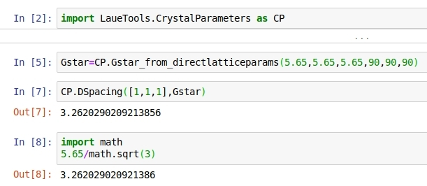

Getting started¶
Launch Graphical User Interfaces of LaueTools¶
- start Lauetools GUIs from command line :
To deal with relative import, the package name ‘LaueTools’ must be specified to the python interpreter as following
Examples:
- python -m LaueTools.LaueToolsGUI
- python -m LaueTools.GUI.LaueSimulatorGUI
- python -m LaueTools.GUI.PeaksearchGUI
The first main GUI, LaueToolsGUI can open also the two last GUIs (LaueSimulatorGUI, PeaksearchGUI)
There are additional basic GUIs for batch processing located in FileSeries folder:
- python -m LaueTools.FileSeries.Peak_Search
- python -m LaueTools.FileSeries.Index_Refine
- python -m LaueTools.FileSeries.Build_summary
- python -m LaueTools.FileSeries.Plot_Maps2
within interactive python (say, ipython -i), GUI can be started thanks to a start() function:
- In [1] : import LaueTools.LaueToolsGUI as LTGUI
- In [2] : LTGUI.start()
Note
in the LaueTools folder :
- neither > python LaueToolsGUI
- nor in >ipython -i : > run LaueToolsGUI will work…
Use LaueTools module as a library¶
With pip installation, LaueTools package will be included to python packages. Therefore any module will be callable as the following:
-In [1] : import LaueTools.readmccd as rmccd
-In [2] : rmccd.readCCDimage(‘myimage.tif’)
In jupyter-notebook, it is also simple in the same manner:
